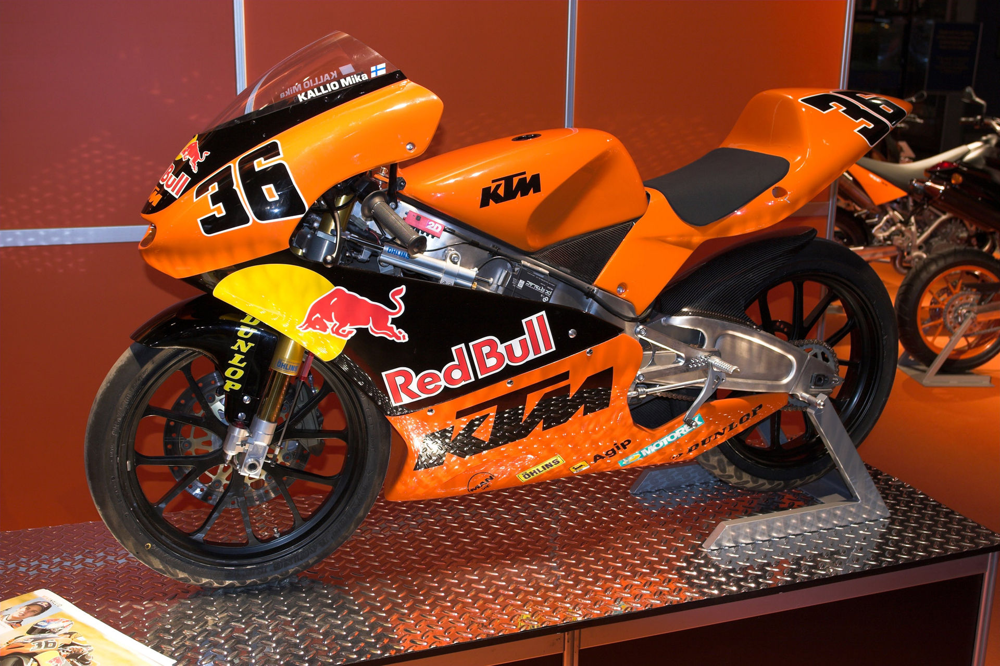

|  | KTM entered motorsports competing in motocross racing. KTM won its first championship in 1974 when Guennady Moisseev claimed the 250cc Motocross World Championship.By the end of 2016, KTM had won more than 260 world championship titles, making the company one of the most successful brands in motorsports.KTM has claimed 96 MXGP, MX1 and MX2 world titles since 1974 and 114 E1, E2, E3 and Super Enduro world titles since 1990. With Ryan Dungey's 2015, 2016 and 2017 victories in the supercross world championship, KTM gained a successful presence in supercross racing as well. |